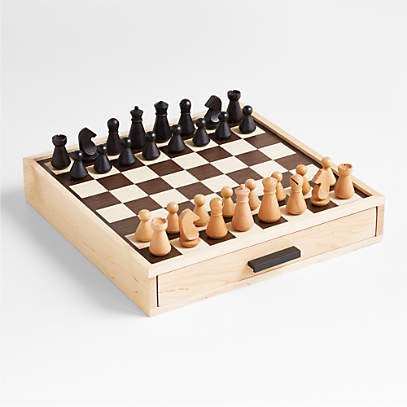

Our modern form of checkers originated in France in the 12th century, but the game has roots that stretch back to ancient times. Historians believe that the oldest form of checkers was played around 3,000 B.C.E. in an ancient city called Ur in Iraq. That’s over 5,000 years ago!
But checkers didn't stop there. It made its way to ancient Egypt as far back as 1,400 B.C.E., where it was known as Alquerque. This game remained very popular throughout the western world for thousands of years.
Fast forward to the 12th century in France, where a Frenchman came up with the idea of playing checkers on a chess board. With a new board design and new rules set, the game was called “Fierges” or “Ferses.”
As checkers evolved, so did its popularity. Today, most English-speaking countries use a 64-space checker board. This is known as the short king board version. However, much of Europe and Asia use a checker board with 100 spaces. This is called the long king version. Some people in Canada even use a board with 144 spaces!
Checkers remains a popular game around the world today. For many children, it’s the first game they learn how to play. And teachers have long known that the simple game of checkers can provide significant training in thought and logic. Of course, it also keeps players occupied with fun competition.
So, next time you're looking for a fun, challenging game to play, remember that checkers has been around for thousands of years and continues to entertain and engage people of all ages!
-checkers board
-video explanation